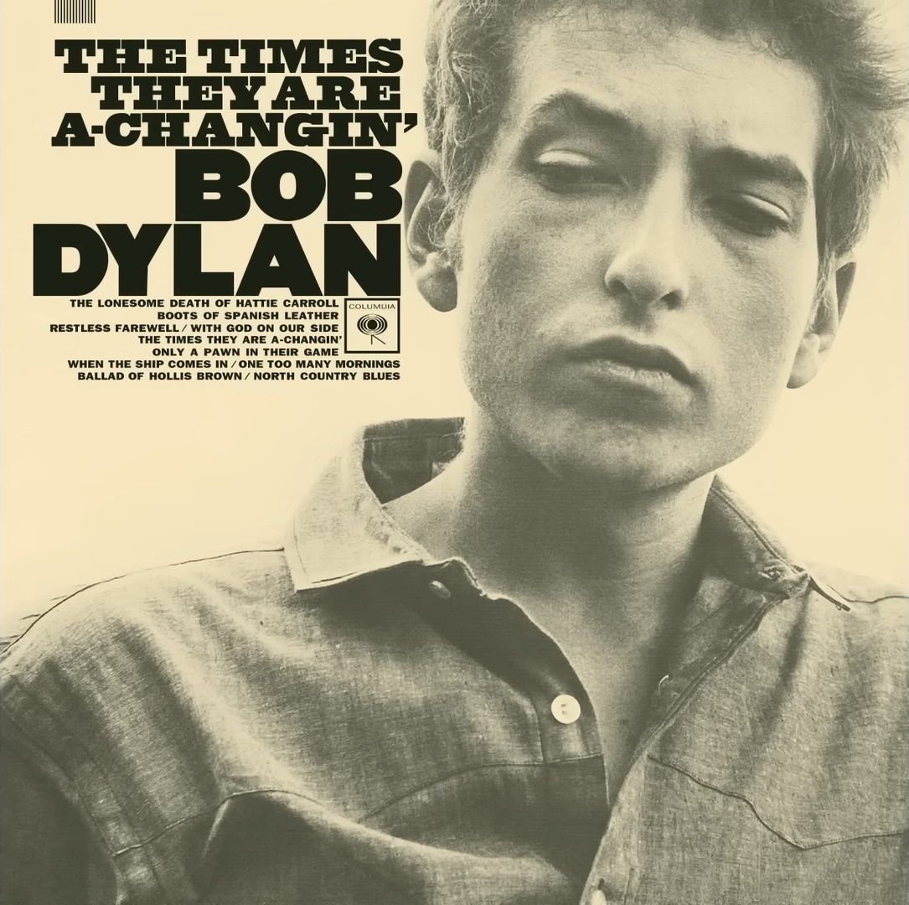
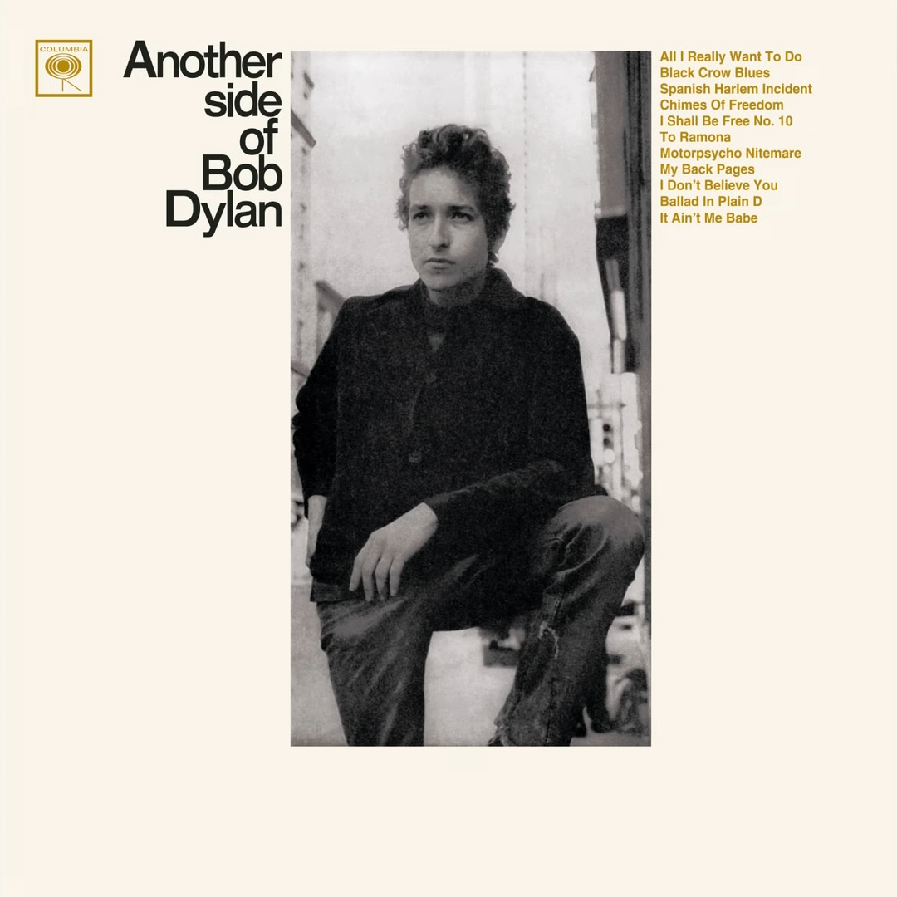
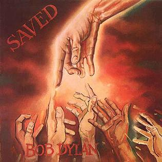
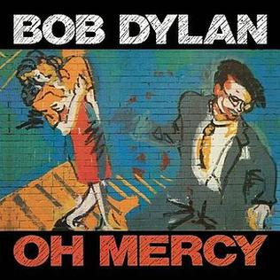
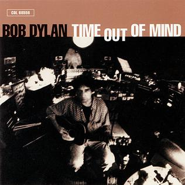

Documentary
Bob Dylan — A 25‑Minute Story
Narrated with Google’s best male voice (en-US-Chirp3-HD-Iapetus).
Audio
Press play, then browse chapters, images, and clips as the narration progresses.
Chapters
How this is made
Script comes from your biography research pages; images are served from your R2 library; clips are embedded from YouTube.
Images

Bob Dylan (1962) album cover

The Freewheelin' Bob Dylan album cover

The Times They Are a-Changin' album cover

Another Side of Bob Dylan album cover

Bringing It All Back Home album cover

Highway 61 Revisited album cover

Blonde on Blonde album cover

John Wesley Harding album cover

Nashville Skyline album cover

Self Portrait album cover

New Morning album cover

Pat Garrett & Billy the Kid album cover

Planet Waves album cover

Blood on the Tracks album cover

Desire album cover

Street Legal album cover

Slow Train Coming album cover

Saved album cover

Infidels album cover

Oh Mercy album cover

Good As I Been to You album cover

Time Out of Mind album cover

Love and Theft album cover

Modern Times album cover
Clips
Interview/Doc clip
Interview/Doc clip
Interview/Doc clip
Interview/Doc clip
Interview/Doc clip
Interview/Doc clip